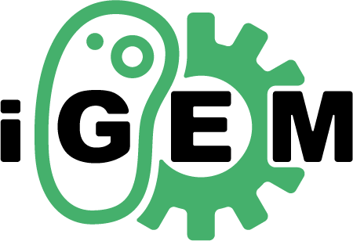

24-26 October, 2022
LATEST UPDATE:

14th International Workshop on Bio-Design Automation
About IWBDA
The Fourteenth International Workshop on Bio-Design Automation (IWBDA) will bring together researchers from the synthetic biology, systems biology, and design automation communities to discuss concepts, methodologies and software tools for the computational analysis and synthesis of biological systems.
The field of synthetic biology, still in its early stages, has largely been driven by experimental expertise, and much of its success can be attributed to the skill of the researchers in specific domains of biology. There has been a concerted effort to assemble repositories of standardized components; however, creating and integrating synthetic components remains an ad hoc process. Inspired by these challenges, the field has seen a proliferation of efforts to create computer-aided design tools addressing synthetic biology's specific design needs, many drawing on prior expertise from the electronic design automation (EDA) community.
The IWBDA offers a forum for cross-disciplinary discussion, with the aim of seeding and fostering collaboration between the biological and the design automation research communities.
IWBDA is organized by the non-profit Bio-Design Automation Consortium (BDAC). BDAC is an officially recognized 501(c)(3) tax exempt organization.
Topics of interest include:
- Design methodologies for synthetic biology.
- Standardization of biological components.
- Automated assembly techniques.
- Computer-aided modeling and abstraction techniques.
- Engineering methods inspired by biology.
- Domain specific languages for synthetic biology.
- Data exchange standards and models for synthetic biology.
Venue
IWBDA 2022 will be held in Paris, France.
- Monday 24th of October 2022 - hosted at the Learning Planet Institute
- Tuesday 25th of October 2022 - hosted at the Learning Planet Institute
- Wednesday 26th of October 2022 - @iGEM Grand Jamboree
IWBDA at iGEM 
Join IWBDA at their annual workshop held at the iGEM Grand Jamboree
Registration
All ticket purchases for IWBDA go through the iGEM Jamboree Website. Select "IWBDA @ iGEM" in the Partner Events to complete your registration. 50% off price tickets are available for students with the code: IWBDASTUDENT.
If you're an iGEM Judge, advisor, or team member, and you want to attend IWBDA you must register through this link. You will need your iGEM registration order number.
To attend IWBDA you need an IWBDA ticket bought through the iGEM Jamboree Website or an iGEM ticket.
Registration Deadline Sep 30, 2022 Registration has been extended, get your ticket now!
IWBDA Program and Proceedings
IWBDA 2022 proceedings are available now.Detailed conference program is available on the Program tab.
Key Dates
| Submission Site Open on EasyChair | 8 June 2022 |
| Abstract Submission Deadline | |
| Workshop Proposal Deadline | |
| Decision Notifications | |
| Registration Site Open | |
| Registration Deadline | |
| Final submission deadline | Oct 7 2022 |
| IWBDA 2022 in Paris, France | 24 Oct - 26 Oct 2022 |
Call for Papers
Abstract Submission
Abstracts must be submitted via EasyChair using this link. The submission deadline isWorkshop Proposals
Applicants may propose to conduct workshops of interest to the IWBDA community. We are inviting workshops in any of the following formats:- Short Demo (30 minutes - 1 hour): this is ideal for anyone who would like to demo a tool, script, library, or new resource to the community. Please note that this can also include tools and software presented at previous IWBDA conferences or other venues.
- Short Workshop (1 - 2 hours): for workshops that require engagement with the audience but do not require half a day or the entire day.
- Half-day workshop (4 hours)
- Full-day workshop
Publication
All accepted abstracts will be posted with a DOI on a dedicated channel for IWBDA on bioRxiv. The full conference proceedings will be posted to the IWBDA website. We are excited to announce ACS Synthetic Biology special issue on IWBDA to publish extended versions of the conference abstracts.ACS Synthetic Biology IWBDA 2022 Virtual Special Issue
ACS Synthetic Biology would like to invite all IWBDA attendees to submit their original work to the journal to appear in the "IWBDA 2022" Virtual Special Issue. Both full-length Articles and concise Letters are welcome. The submission deadline is April 30, 2023 June 30, 2023.
If you wish to be part of this special collection, please see the ACS Synthetic Biology Invitation for further information and instructions.
Contact
All questions about submissions should be emailed to Ayush Pandey (apandey AT caltech.edu).Keynote Speaker
Gregory Batt
Gregory Batt is a senior research scientist at Inria and the head of the InBio group at Institut Pasteur. He studied molecular and cellular biology and computer science at the Ecole Normale Supérieure de Lyon. He received his PhD in computer science from the University of Grenoble in 2006. Prior to joining Inria in 2007, he was a postdoctoral researcher at Boston University. Since 2017, he leads the InBio team, an Inria/Institut Pasteur research group. The InBio team is interested in understanding, controlling and optimizing cellular processes from the single cell to the cell population levels. InBio members combine wet and dry biology in the same lab. They employ systems and synthetic biology approaches with control and active learning methods, together with stochastic and statistical modeling frameworks. They also develop affordable bioreactor-based platforms with automated measurements and reactive experiment control. In recent applications, they have notably designed an artificial differentiation system in yeast and used it to create consortia with tuneable composition, and have characterized protein secretion under various stress conditions to optimize production in yeast.
Sponsors
Workflow
Tool
Class

Organizing Committee
Contact us at: iwbda-exec AT lists.bio-design-automation.org
- General Chair - Alexis Casas, Imperial College London
- Program Committee Chair - Alejandro Vignoni, Universitat Politècnica de València
- Publication Chair - Ayush Pandey, California Institute of Technology
- Local Chair - Olivier Borkowski, INRAE, Université Paris-Saclay
- Student Volunteer Chair - Zoé Pincemaille, UTC Compiègne
- Co-Web Chair - Aaron Adler, BBN Technologies
- Co-Web Chair - Prashant Vaidyanathan, Microsoft Research
- Finance Chair - Traci Haddock-Angelli, Asimov
- Student Volunteers - Daryna Batechko, Otim Geoffrey, Emma Trorial, Michael Sedbon
- Past General Chair - Prashant Vaidyanathan, Oxford Biomedica
- Past Program Committee Chair - Marilene Pavan, LanzaTech
- Past Publication Chair - Jenhan Tao, Generate Biomedicines
- Past Logistics Chair - Alexis Casas, Imperial College London
- Past Co-Web Chair - Aaron Adler, BBN Technologies
- Past Co-Web Chair - Prashant Vaidyanathan, Oxford Biomedica
- Past Finance Chair - Traci Haddock-Angelli, Asimov
Email List
Sign up for the announcements email list here.
Anti-harassment Policy
The International Workshop on Bio-Design Automation will not tolerate harassment of workshop participants. Examples of such prohibited practices would include gossiping, slurs, offensive or derogatory comments, or other verbal or physical conduct. This includes sexual harassment as defined as "unwelcome sexual advances, requests for sexual favors, and other verbal or physical conduct of a sexual nature" not only when the conduct is made as a condition of workshop participation ("quid pro quo" harassment), but when the conduct creates an intimidating, hostile, or offensive workshop environment. IWBDA participants who feel they are being harassed by participants, organizers, or support staff should make it clear to the individual(s) that such behavior is offensive and unwelcome. Any participant who believes he or she has been subjected to harassing conduct can report the matter to the IWBDA organizing committee or the Bio-Design Automation Consortium (BDAC) executive committee.
Past Years
- 13th International Workshop on Bio-Design Automation (IWBDA 2021): Online, September 20-September 24, 2021
- 12th International Workshop on Bio-Design Automation (IWBDA 2020): Online, August 3-August 5, 2020
- 11th International Workshop on Bio-Design Automation (IWBDA 2019): Cambridge, UK, July 8-July 10, 2019
- 10th International Workshop on Bio-Design Automation (IWBDA 2018): Berkeley, CA, July 31-August 3, 2018
- 9th International Workshop on Bio-Design Automation (IWBDA 2017): Pittsburgh, PA, August 8-10, 2017
- 8th International Workshop on Bio-Design Automation (IWBDA 2016): Newcastle University, Newcastle upon Tyne, UK, August 16-18, 2016
- 7th International Workshop on Bio-Design Automation (IWBDA 2015): Seattle, WA, August 19-21, 2015
- 6th International Workshop on Bio-Design Automation (IWBDA 2014): Boston, MA, June 11-12, 2014
- 5th International Workshop on Bio-Design Automation (IWBDA 2013): Imperial College, London, UK, July 12-13, 2013
- 4th International Workshop on Bio-Design Automation (IWBDA 2012): Moscone Center, San Francisco, CA, July 3-4, 2012
- 3rd International Workshop on Bio-Design Automation (IWBDA 2011): San Diego Convention Center, San Diego, CA, June 6-7, 2011
- 2nd International Workshop on Bio-Design Automation (IWBDA 2010): Anaheim, CA, June 14-15, 2010
- 1st International Workshop on Bio-Design Automation (IWBDA 2009): Moscone Center, San Francisco, CA, July 27, 2009